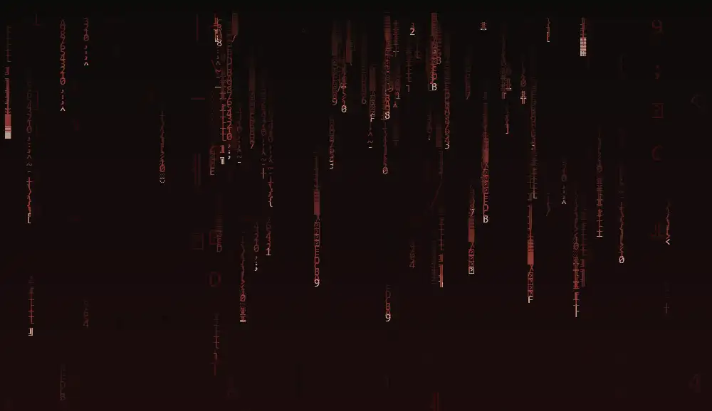
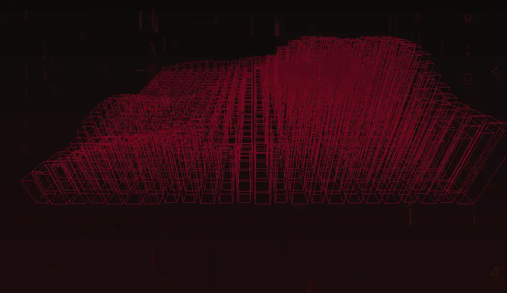
豆包 - PERSONAL WEB
XU ZHAN
写字的人开始写代码，听歌的人试着做网页。
这一页，是我递给社团的手写的名片。
了解一个人，莫过于看他做过什么。那就不急着自我介绍了，下面这些才算数。
这几样是我在 E:\code 里真刀真枪做出来的：有写着玩的，有认真挖了几个小时坑的。每一样都教会我一件事。
项目档案· 点名称展开详情
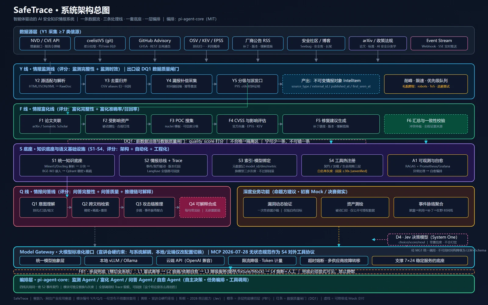
给安全工程师用的漏洞情报平台。你问一句"Ollama 未授权访问漏洞影响我们哪些服务，今晚先修哪个"，它自己去翻漏洞库和文档，答案带着出处和修复优先级回来。
数据从 7 类源进来，NVD、CVE、GitHub Advisory、OSV、KEV、EPSS、厂商公告，还有安全社区和 arxiv，中间走监测去重和六维富化，落到知识底座，最后接问答。
我负责问答线、TaskGraph 编排、MG1 模型网关和接口契约。TaskGraph 管监测、富化、问答、自愈四个 Agent，能挂起再恢复。所有模型调用都从 MG1 走，业务代码里不许直接 import 任何 provider，换模型只改配置。兜底留了个阶梯，工具、规则、本地模型、云模型、人工工单，每一级都记进 trace，不许悄悄失败。
真实联网跑了 74.08 小时没断过。新漏洞监测延迟 P95 是 4.99 小时，归并率 91.2%，七万多条原始数据收敛成 6,314 条情报。20 条黄金问答全过，没证据时会明确拒答，不编。全量单测 908 个，907 通过。
把业务问题变成取数答案。流程是：检索相关的表，让大模型写出只读 SQL，做语法校验并限制行数，再执行。每一步都留 trace，答错了能查到是哪一步出的问题。
检索这块做了三级漏斗，先用词法召回一批候选表，让大模型精排，最后沿着外键把关联表一起带进来。SQL 安全上了两道锁：sqlglot 做 AST 只读校验并注入 LIMIT，DuckDB 本身也用只读方式打开。答不出来的时候会明确反问，分清是"没找到合适的表"还是"问题太含糊"，不会硬猜一个结果给你。
后端垂直切片已经跑通，约 73 个测试用例。TypeScript 编排层和前端还没做。
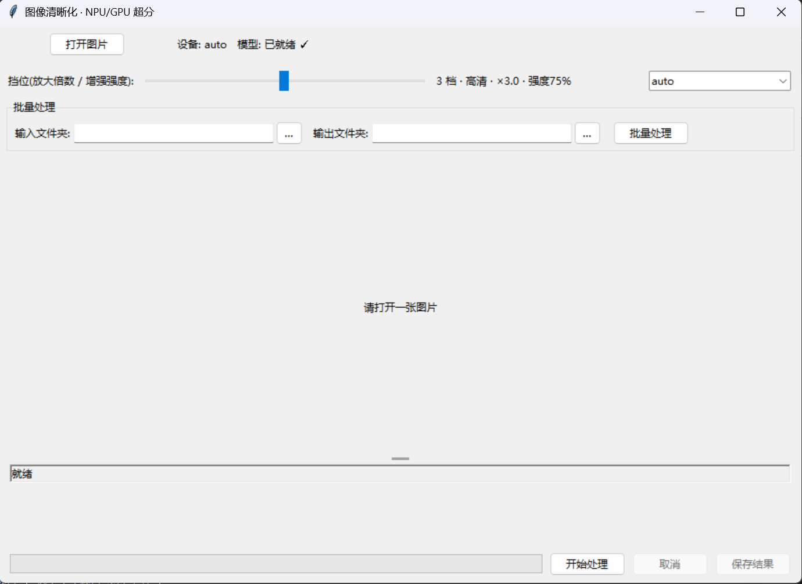
本地跑 Real-ESRGAN，把模糊照片变清晰再放大。模型内置好了 69 MB，双击 启动.bat 自动装环境。
工程上的重点在推理后端抽象。同一套核心代码支持 OpenVINO 的 NPU、iGPU、CPU，也支持 onnxruntime 的 DirectML 走 RTX，启动时自己挑一个能用的。图片是分块推理的，块与块之间用羽化过渡把接缝抹掉，另加逐档强度混合，倍率给了 5 档，从 ×1.5 到 ×4.0。
界面能处理单张，也能整文件夹批量，有进度，中途能取消。
有个事得记着：app/core/config.py 里躺着一个没被引用的明文 API Key，交之前要删掉，git 历史也得处理。
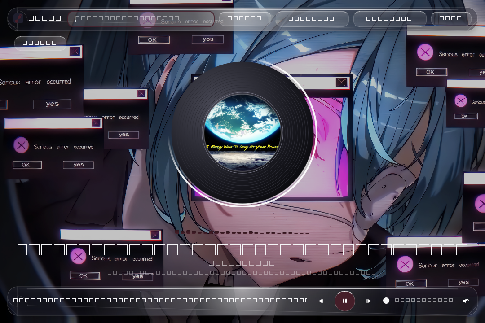
一个单文件的 PyQt6 播放器，约四千行。能多线程扫盘建曲库，曲库落在 SQLite 里，还能改歌曲元数据、异步加载封面、管歌单和收藏、显示 .lrc 同步歌词和桌面悬浮歌词，黑胶详情页、可视化条、系统托盘都有。
最费劲的是桌面壁纸模式，把播放器自己画成 Windows 桌面壁纸，顺便把任务栏自动藏起来。后来做了个精修版 Mus1c-LiquidGlass，加了毛玻璃面板，再用 UpdateLayeredWindow 重写壁纸渲染，把 Win11 24H2 上的闪烁修掉了。
不联网。文件在哪，歌就在哪放。
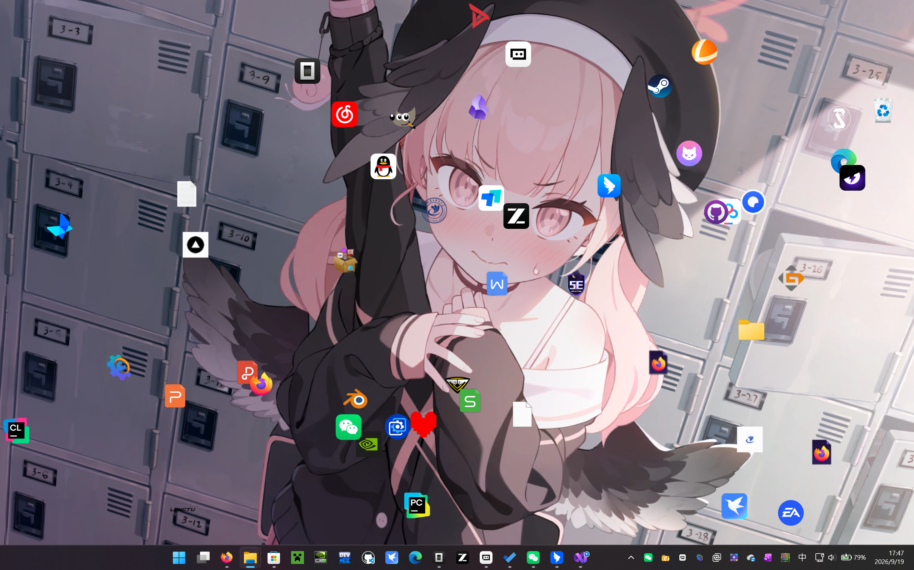
让真实的桌面图标飞起来，互相碰撞，跟着鼠标和音乐动。做法是用 P/Invoke 跨进程读到 explorer 的 SysListView32，把每个图标的文本、位置和 shell 高清图标抠出来，再放飞。
运动模式做了 13 种，Bounce、Circle、Vortex、Gravity、Brownian、Pulse、Disco 这些都有。图标之间是成对圆碰撞加弹性冲量。鼠标悬停能暂停，甩动能投掷，按住右键蓄力发射，双击直接运行原程序。
音频驱动走 WASAPI 回环加 FFT，图标跟着鼓点跳，响应曲线可以用鼠标拖着改。按 ESC 一键还原真实桌面，不会把你的桌面弄乱。
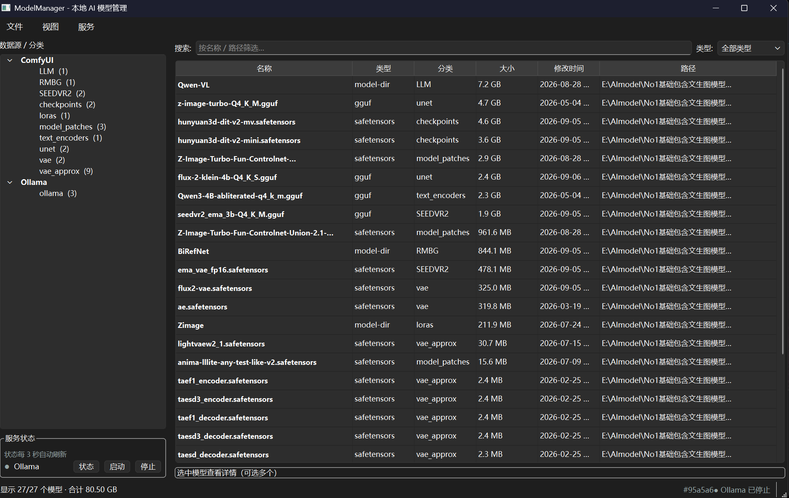
本机 ComfyUI 和 Ollama 的模型散在好几个文件夹里，翻起来烦，就写了这个统一管。左边按来源和分类建树，右边列表带类型、分类、大小、修改时间和完整路径，能按名称或路径搜，底下实时统计一共多少个模型、合计多少 GB。
"模型从哪来"这件事抽成了 ModelSource，想接新来源再写一个实现就行。删除做成了回收站式，删错了能拿回来。停 Ollama 服务时按进程树清理，不留孤儿，服务状态每 3 秒刷一次。
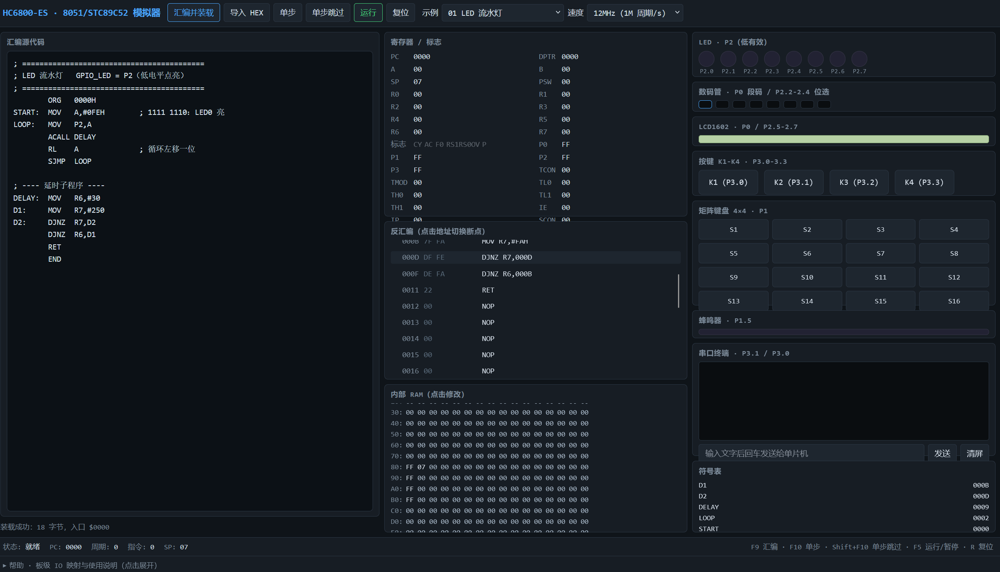
在浏览器里还原 HC6800-ES 这块 8051 开发板，纯 JavaScript 写的，没用框架。左边写汇编，中间看寄存器和反汇编，右边是完整的外设面板。
能汇编并加载、导入 HEX、单步和单步跳过、运行、复位。寄存器和标志位实时刷新，反汇编列表可以点地址下断点，内部 RAM 能直接改。外设覆盖 P2 低有效 LED、P0 段码数码管、LCD1602、蜂鸣器、4×4 矩阵键盘、串口终端，另外有符号表和 12MHz 速度节流。
内置了示例程序（比如 LED 流水灯）。写它的原因很简单：没带板子的时候也想验证一小段汇编到底跑成什么样。
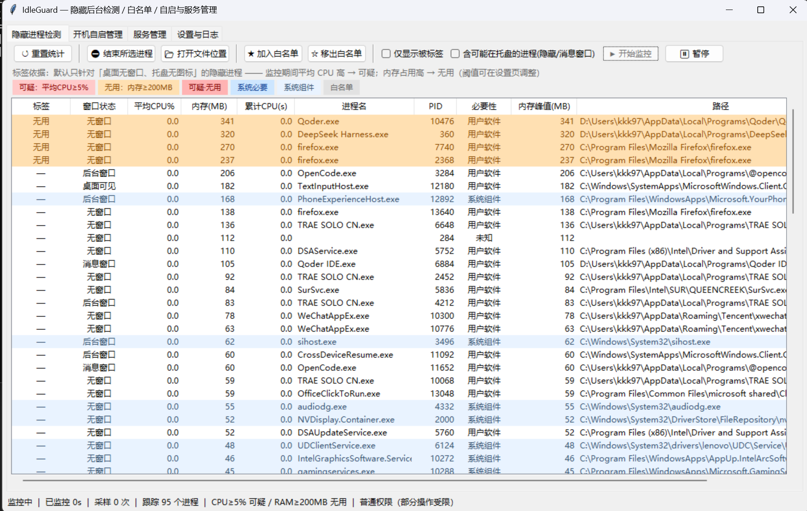
对付那些桌面上没窗口、托盘里没图标的进程。这类东西任务管理器里很难一眼挑出来，它按窗口状态和托盘这两个标签单独拎出来。
进程表有九列，窗口状态、平均 CPU、内存、累计 CPU 时间、PID、必要性分级、内存峰值、可执行文件路径。判定规则就写在列头上，平均 CPU 到 5% 标可疑，内存到 200MB 标无用，两个都占就叫可疑·无用。另有系统必要、系统组件、白名单三档做对照。选中的进程能一键加入或移出白名单，也能搜索、排序、打开文件位置、结束进程。
四个页面分别是隐藏进程检测、开机自启管理、服务管理、设置与日志。启动项和服务走注册表和 sc.exe、reg.exe，这里守一条线：破坏性操作都可逆。禁用启动项会先备份原注册表值，改服务启动类型也记下原值，随时能还原。采样在后台守护线程里跑，不碰界面。
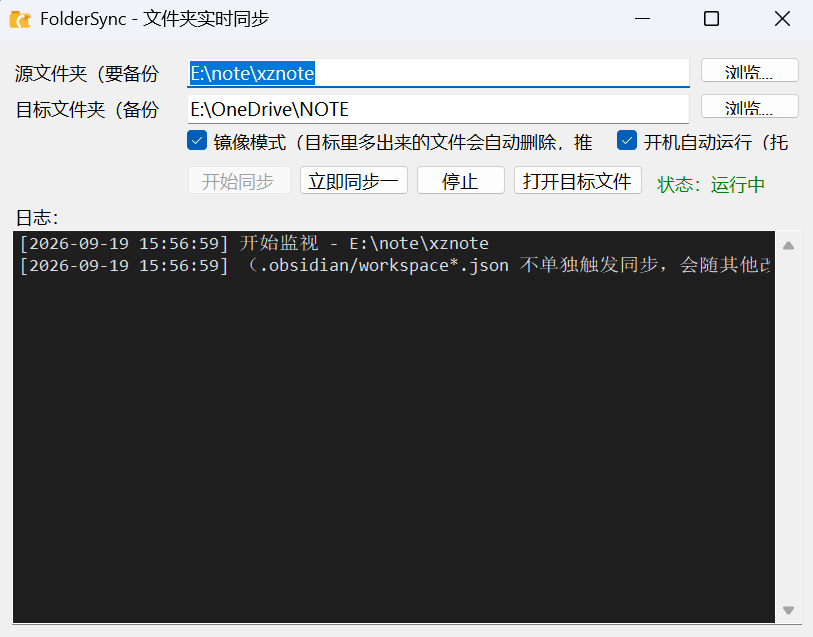
常驻后台的文件夹镜像同步，把 E:\note\xznote 镜像到 OneDrive。
这里的坑在于别把写了一半的笔记同步出去。改动先防抖 3 秒再合并，另外挂了个 10 分钟的安全网兜底，出问题还能回滚。参数都写在 JSON 里，双击就能用，开机自启常驻。
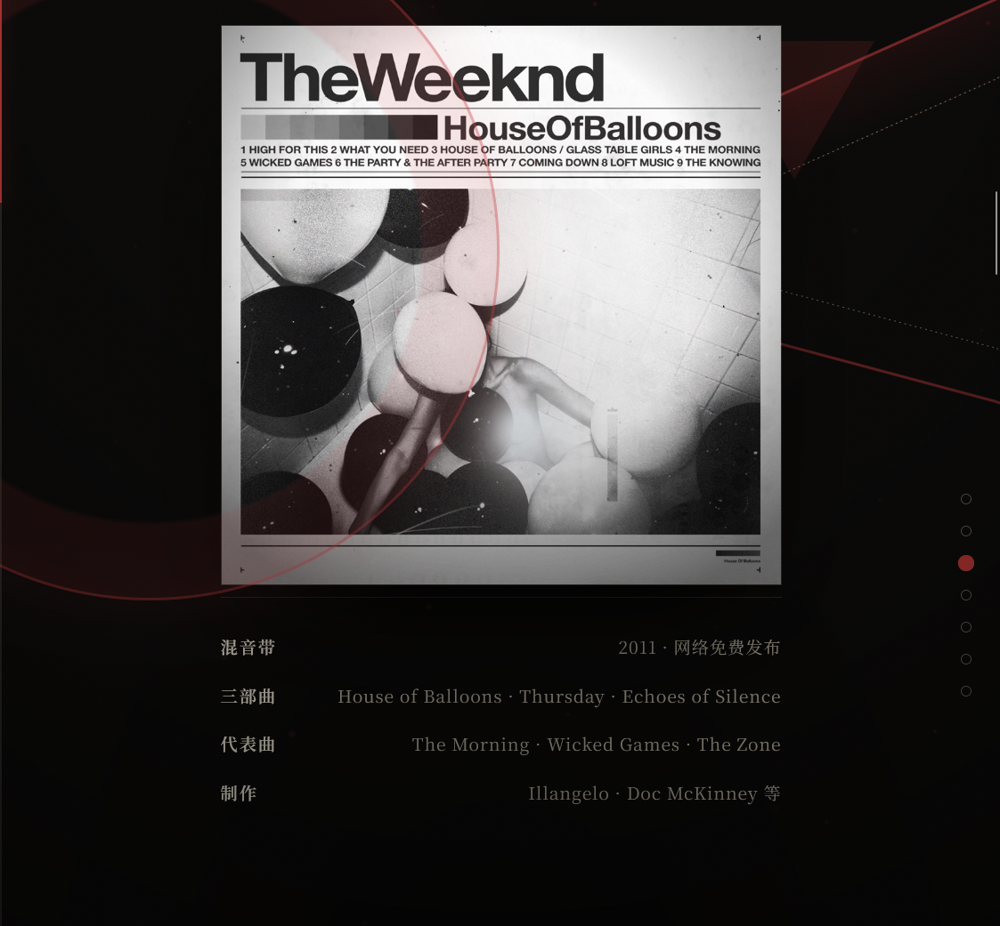
The Weeknd 档案站。骨架跟万青那个一样，换肤不换骨：按章节分区换色（酒红、冷蓝、银灰），正文从中文散文换成 52 首曲目清单和幕后故事。
这一版主要拿来试动效。底片走马灯画廊、快门辐条进场、构成主义几何背景、逐条飞入都用上了。
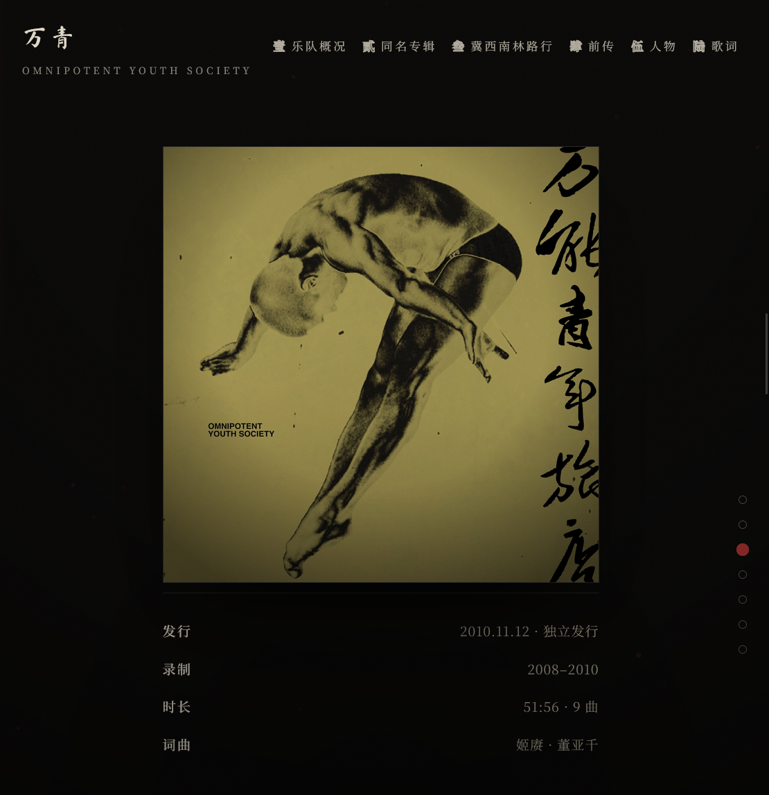
墨纸红印风格的万青档案站，有歌词、成员和章节时间线，配了灰尘粒子、幕布和打字机标题。
你正在看的这一页个人站，骨架就是从这里长出来的。
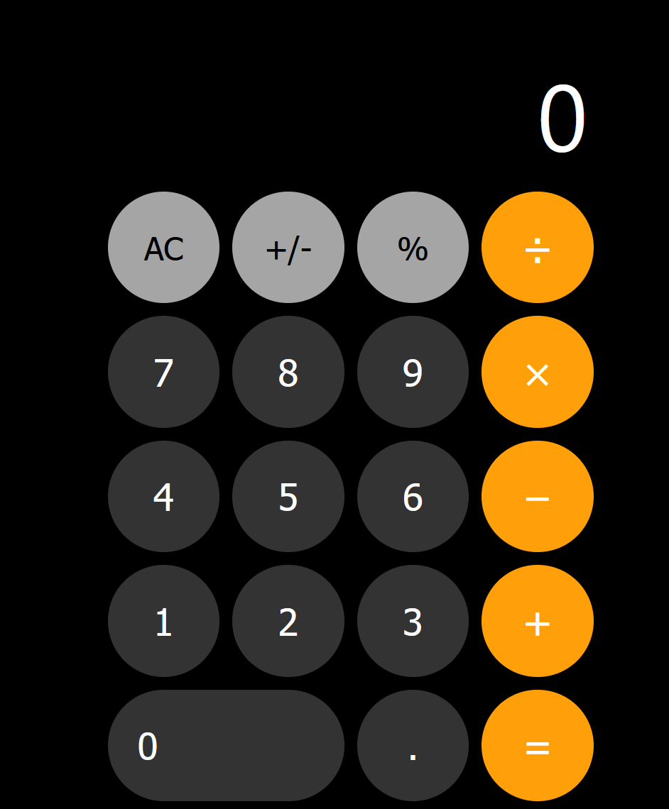
练「苹果设计」时做的网页计算器。按钮的节奏、字号缩放和阴影质感基本靠 CSS 复刻，做了深色和浅色两套主题，纯 HTML/CSS/JS 没有依赖。
这次刻意不加动效，类名也尽量少写，算是练克制。
赛博朋克风格的个人主页，手写无框架。藏了几颗彩蛋：吉他指板每一格都能点响（走一套共用的暖拨弦合成器），和弦卡能试听，底下还有一个小音游，谱面是用 Web Audio 现场分析鼓点生成的，四轨下落、判定、连击、结算都做了。
背景是预渲染的无缝循环动图（字符乱码墙加线框城市），琴弦和扫描线做氛围。
把男声实时变成女声，推理跑在 Intel AI Boost NPU 上，全链路走 OpenVINO，CPU 和 GPU 可以回退。
流式推理用 1 秒主窗加 0.5 秒滑动，接缝处交叉淡化抹平；VAD 做静音门控，不说话就直接跳过推理省电。没模型的时候会自动退回 DSP 变调，保证一定出得了声。
C++ 写的八数码求解器，广度优先搜索，状态做了去重，把乱序的 3×3 棋盘还原成目标布局。
本来是薅微软积分用的，写着玩，但这一趟把「状态空间」四个字弄明白了。顺带理解了为什么同一道题换个搜索方向，代价能差一个量级。
被沙箱的权限拒绝卡住时拿来救急的脚本。它会把目录链上的 ACL 查一遍，找出缺 WRITE_DAC、WRITE_OWNER 或 FullControl ACE 的那一层并补齐，补完自己再验一次确认修好了。
带完整的 SYNOPSIS 和中文注释。这是给自己工具链打的补丁，不是给别人用的东西。
别问我会不会，问我想不想琢磨。—— 豆包 · 项目栏备注
我叫 徐湛 ，别人叫我豆包(笑)。几个月前我还在怀疑「代码这种东西，真的和我有关系吗」。现在这句话，成了这一页的第一行字。
这一页是我和 AI 一起敲出来的。它管语法和结构，我管字与字之间的分寸。希望你翻的时候能感觉到，这不是把模板填满就交差的东西。
几件小事
成长线
工具是会过时的，手感不会。比起超出我预算的工具，我更喜欢更便宜或更开源的东西。
手提箱里
正在进化的
代码也是一种字。以前的人要先学会"写字"才能写出"好文章"，现在的人，只要有"好想法"就能写出"好文章"
《冀西南林路行》听了又听：更"宏大"的命题，实则和当下、你我，息息相关
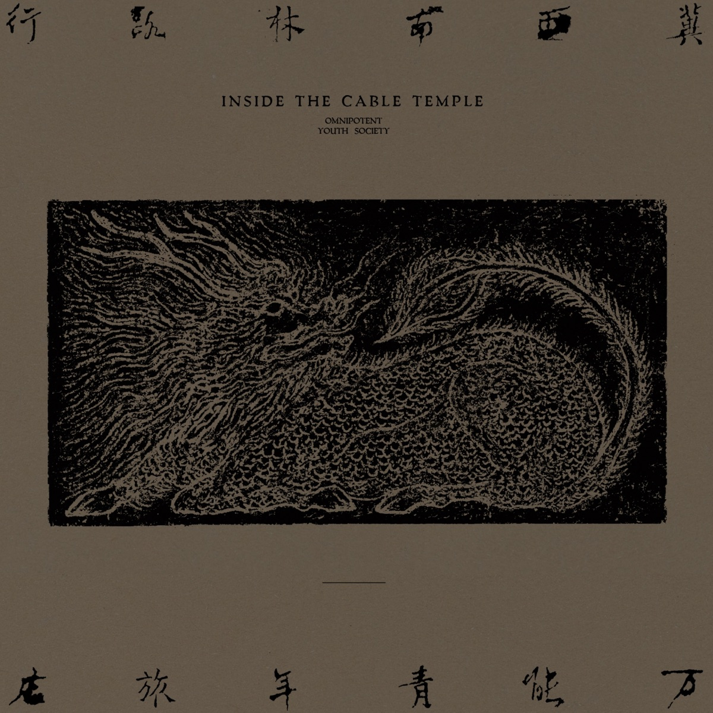
《赛博朋克：边缘行者》科技与人、爱与死亡
《三十而立》自贬以刺痛自己的高傲，同时又高傲的显出愚钝以嘲弄自己的智慧，最后再将以上一切行为施予轻蔑的嗤之以鼻
好看的背面是耐心，耐心的背面是真心。—— 豆包 · 审美是个动词
我想加入 vibe coding 社团，不是为了会说一句「我会写网页」，而是想和一群愿意为细节较劲的人待在一起。
—— 徐湛（豆包） · 入社申请 · 第一稿我会的不多，但愿意学。如果社团需要一个抢着改 bug、也抢着改注释的人，我第一个举手。
做一辈子好玩的东西，或者至少，做几个。—— 与未来队友共勉
正文一个字都没改，只是往这页里塞了几根弦、一个指板和一个音量旋钮。弹琴的人，总得留点自己的手势。
点下面的指板格子试试，这次的音色调暖过了。
一把入门电吉他，失真一开就是整个夜之城的底噪。
把干净的分解和弦，一层层染成摇滚的颜色。
音箱不一定贵，但一定要够响，响到能盖过一天的疲惫。
厚一点，才压得住重失真；像出膛的子弹，一下就到。
六根弦，够我拆掉一整天的情绪。—— 豆包 · 拨片备注
感谢你看到这里。
前面几页都是正经东西，项目、技能、书影音。既然你都翻到底了，就把藏在这儿的最后一件也说了：上面这位是强尼·银手。赛博朋克 2077 里那个抱着吉他跟全世界叫板的家伙，也是这家站从头到尾的底色。
顺便把彩蛋都指出来：上面的♪ NEVER FADE AWAY 按钮点开是个小音游，四轨下落、有判定和结算；谱面不是手写的，是现场分析这首歌的鼓点生成的。吉他页的指板点得响，和弦卡能试听。武侍乐队那首《Never Fade Away》，歌名就印在他旁边那把琴上。
愿意翻到最后的人，才找得到藏在最底下的东西。